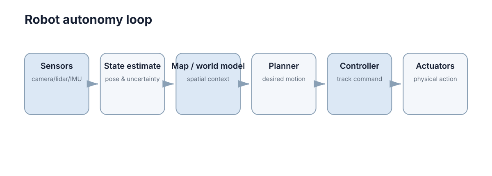

Models, Kinematics & Dynamics
机器人要在真实世界运动，至少要解决三件事：它在哪里、它会怎样运动、要产生这种运动需要什么力或力矩。 坐标系、运动学和动力学分别对应这三个层次，而模型精度决定了这三个层次的答案能信到什么程度。
初学者最容易犯的错误是“混层求解”：用运动学去回答力的问题（比如想问电机扭矩却只算了轨迹），或者用动力学去回答几何问题（明明只关心末端位置却先建了完整惯性矩阵）。正确的做法是先判断任务处在哪一层，再决定模型的复杂度。

坐标系与参考框架
同一个点可以在相机坐标系、机器人底盘坐标系和地图坐标系下得到完全不同的数值。机器人系统因此不会只说“目标在 \((2,1)\)”，而要说明“目标在 camera frame 还是 map frame”。
刚体位姿通常由旋转 \(R\) 和平移 \(t\) 表示，齐次变换写成
其中 \(R\in SO(3)\) 满足 \(R^\top R=I\) 且 \(\det R=1\)。若已知 \(T^A_B\) 和 \(T^B_C\)，则
这条链式关系就是机器人 TF 系统的数学基础。它的逆变换有闭式解：
注意不是简单地把 \(t\) 取负——外参写反是机器人调试中最常见的“方向颠倒”错误来源。
工程上常见的坐标系及其职责：
| 坐标系 | 记号约定 | 典型来源 | 常见错误 |
|---|---|---|---|
世界/地图 map |
\(T^{map}_{odom}\) | 定位模块输出 | 与 odom 混用导致跳变 |
里程计 odom |
\(T^{odom}_{base}\) | 轮式里程计积分 | 长期漂移被当作真值 |
机器人本体 base_link |
\(T^{base}_{sensor}\) | URDF 静态外参 | 外参旋转方向取反 |
传感器 camera_link |
\(T^{base}_{cam}\) | 标定结果 \(\pm0.5°\) | 光学轴 vs 机械轴混淆 |
工具 tool0 |
\(T^{base}_{tool}\) | 正运动学计算 | 单位混用（m vs mm） |
在工程层，一个二维坐标变换的小例子可以把“先旋转、再平移”的顺序固定下来：
import math
def transform_point(px, py, tx, ty, yaw):
c, s = math.cos(yaw), math.sin(yaw)
return c * px - s * py + tx, s * px + c * py + ty
这里输入点位于局部坐标系，tx, ty, yaw 描述该坐标系相对目标坐标系的位姿。实际系统还要同时传递 frame 名称和时间戳。
运动学映射
运动学不考虑质量和受力，只研究几何关系。对差速小车，左右轮线速度为 \(v_l,v_r\)，轮距为 \(L\)，车体线速度和角速度近似为
因此两轮同速时直行，速度不同则转弯。对机械臂，关节变量 \(q\) 通过正运动学映射到末端位姿；Jacobian 则描述关节速度和末端速度的局部关系
这两层的分工可以明确列表：
| 维度 | 运动学 | 动力学 |
|---|---|---|
| 输入 | 位置/速度 \(q,\dot q\) | 力矩 \(\tau\) 或力 \(F\) |
| 输出 | 位姿、速度 \(\dot x\) | 加速度 \(\ddot q\) |
| 是否含质量 | 否 | 是 |
| 典型用途 | 轨迹规划、IK、TF | 力矩控制、轨迹跟踪 |
| 失效场景 | 高速、重载时不准 | 低速时算力浪费 |
| 主要参数 | 连杆长度、轮距 \(L\)、轮径 \(r\) | 质量、惯量 \(I\)、摩擦 |
运动学回答的是“怎么动”，不是“为什么能这样动”。当任务对速度或负载敏感时，运动学给出的答案会系统性偏差，且偏差随速度平方增长。
动力学把质量、惯性和力加入模型
当控制任务需要考虑加速度、负载或高速运动时，只靠运动学就不够。机械系统常写成
其中 \(M(q)\in\mathbb R^{n\times n}\) 表示惯性矩阵（对称正定，\(n\) 为自由度数），\(C(q,\dot q)\dot q\) 表示科氏力与离心力项，\(g(q)\) 表示重力项，\(\tau\) 是执行器力矩。
每一项的量级决定了控制难度：低速时 \(M\ddot q\) 与 \(C\dot q\) 都可忽略，只剩 \(g(q)\)，所以简单的 PD + 重力补偿就能稳定；高速时 \(C(q,\dot q)\dot q\) 随 \(\dot q^2\) 增长，若忽略它，跟踪误差会随速度平方上升。举个数值感受：二连杆臂在关节速度 5 rad/s 时离心项可能占总力矩的 20%–40%，而 1 rad/s 时不到 3%。
| 项 | 物理含义 | 量级随速度 | 忽略后果 | 补偿方式 |
|---|---|---|---|---|
| \(M(q)\ddot q\) | 惯性 | 与 \(\ddot q\) 线性 | 加速段跟踪滞后 | 反馈线性化 |
| \(C(q,\dot q)\dot q\) | 科氏/离心 | \(\propto \dot q^2\) | 高速段误差突增 | 前馈模型 |
| \(g(q)\) | 重力 | 与速度无关 | 静态位置偏移 | 重力补偿 |
| 摩擦项 \(F_v\dot q+F_c\text{sgn}(\dot q)\) | 黏滞 + 库仑 | 线性 + 常量 | 低速爬行、死区 | 摩擦辨识 |
移动机器人低速导航时，简单运动学模型往往已经够用；机械臂高速轨迹控制、无人机姿态控制则更依赖动力学。模型复杂度要由任务决定。
旋转表示的三种形式
姿态是机器人学里最容易出错的部分，因为同一个旋转可以写成完全不同的数值。三种主流表示各有明确的适用边界。
欧拉角：用三个角 \((\phi,\theta,\psi)\) 表示，通常是绕固定轴或体轴的顺序旋转。它的优点是直观、维数最少（3）；缺点是存在万向锁（gimbal lock）：当中间角 \(\theta=\pm90°\) 时，第一和第三旋转轴重合，雅可比秩下降，逆解不唯一。
旋转矩阵：\(R\in SO(3)\)，9 个分量、6 个独立约束。优点是线性、可复合、无奇异；缺点是冗余（9 个数描述 3 个自由度），需要正交化才能保持 \(R^\top R=I\)。
四元数：\(q=(w,x,y,z)\)，单位四元数满足 \(\|q\|=1\)，4 个数、1 个约束。优点是无奇异、插值平滑（SLERP）；缺点是符号二义性（\(q\) 与 \(-q\) 表示同一旋转），直接线性插值会失真。
三种表示的关键对比：
| 表示 | 参数个数/自由度 | 奇异性 | 复合运算代价 | 捷联积分误差 | 典型使用位置 |
|---|---|---|---|---|---|
| 欧拉角 | 3 / 3 | 有（万向锁，\(\theta=\pm90°\)） | 3 次三角运算 | 在奇异点发散 | 人类可读接口、UI |
| 旋转矩阵 | 9 / 3 | 无 | 一次 \(3\times3\) 乘法 | 需正交化，误差 \(\sim10^{-7}\)/步 | 变换链、TF、视觉 |
| 四元数 | 4 / 3 | 无 | 一次四元数乘法（16 乘 + 12 加） | 需归一化，漂移小 | IMU 姿态积分 |
从旋转矩阵到四元数的转换（数值上最稳健的写法之一）：
当 \(w\to0\)（旋转接近 \(180°\)）时该公式数值不稳，必须改用最大对角元分支。这个细节说明：没有一种表示在所有场景下都安全，切换表示本身就要处理边界情形。
捷联积分的误差量级可以作为选型判据：IMU 在 200 Hz 下用一阶欧拉积分，姿态漂移典型 \(0.5°\text{–}2°/s\)；用四元数积分 + 归一化可降到 \(0.05°\text{–}0.2°/s\)；用旋转矩阵则需要每步正交化，否则误差累积更快。因此姿态积分优先用四元数，变换链优先用齐次矩阵。
雅可比与奇异性
Jacobian 把关节速度线性映射到末端速度：
其中 \(m\) 是任务空间维数（平面任务 3，空间任务 6），\(n\) 是关节数。对平面二连杆臂，\(J\) 可显式写出：
由此得到两条实用推论：
- 力映射是对偶的：\(\tau=J^\top(q)F\)。把末端外力 \(F\) 换算成关节力矩时用的是 \(J^\top\)，这不是巧合，而是虚功原理的直接结果；
- 逆解在奇异位形失效：由 \(\dot q=J^{-1}(q)\dot x\)（方阵情形）可见，当 \(\det J(q)\to0\)，同样的末端速度需要趋于无穷的关节速度。
奇异性的定量度量是可操作度：
\(w\to0\) 即为奇异位形。几何上它对应“所有关节运动都无法让末端沿某个方向移动”的构形。可操作度还能用奇异值解释：\(J\) 的最小奇异值 \(\sigma_{\min}\) 越小，末端在对应方向上的可控速度越弱。
| 奇异类型 | 几何条件 | 现象 | 处理方式 |
|---|---|---|---|
| 边界奇异 | 臂完全伸展 | 末端无法继续外伸 | 规划阶段避开工作空间边界 |
| 内部奇异 | 关节轴共线（如腕部 \(q_5=0\)） | 逆解退化为无穷多解 | 阻尼最小二乘（DLS） |
| 数值奇异 | \(\sigma_{\min}/\sigma_{\max}<10^{-3}\) | 关节速度尖峰、抖动 | 截断奇异值（TSVD） |
工程上的标准解法是阻尼最小二乘：
\(\lambda\) 一般取 \(10^{-3}\text{–}10^{-1}\) 之间的值：太小无法抑制尖峰，太大会引入末端跟踪误差。这条公式是“奇异附近用牺牲精度换稳定”的典型范式。
import numpy as np
def dls_step(J, dx, lam=1e-2):
A = J @ J.T + (lam ** 2) * np.eye(J.shape[0])
return J.T @ np.linalg.solve(A, dx)
def manipulability(J):
return float(np.sqrt(max(np.linalg.det(J @ J.T), 0.0)))
慢速通过奇异区还有一个廉价技巧：在 \(w(q)<w_{th}\) 时按比例缩放末端速度，即 \(\dot x\leftarrow\dot x\cdot w(q)/w_{th}\)，让轨迹在奇异附近自然减速而不是跳变。
差速运动模型
二维差速车位姿为 \((x,y,\theta)\)，在短时间 \(\Delta t\) 内可近似更新为
这个写法把 \(\theta\) 固定在区间起点，因此当 \(\omega\) 较大时误差不可忽略。严格解是圆弧积分：
两者在 \(\omega\to0\) 时一致（需要洛必达处理）。误差量级判据：当 \(\omega\Delta t<0.05\) rad 时一阶近似相对误差 \(<0.1\%\)；当 \(\omega\Delta t=0.3\) rad（约 \(17°\)）时位置误差可达厘米级。因此低速导航用一阶近似，快速转向必须用圆弧模型或更小步长。
import math
def diff_drive_step(x, y, yaw, vl, vr, wheel_base, dt):
v = 0.5 * (vl + vr)
w = (vr - vl) / wheel_base
return (x + v * math.cos(yaw) * dt,
y + v * math.sin(yaw) * dt,
yaw + w * dt)
这段代码没有考虑轮胎打滑、执行器动态和地形，因此适合低速平面运动，不应被当成真实车辆的完整物理模型。
| 误差来源 | 数学表现 | 典型量级 | 是否可标定 | 缓解手段 |
|---|---|---|---|---|
| 轮径误差 \(\Delta r/r\) | 尺度误差，随里程线性增长 | 1%–3% | 是 | 直线标定 |
| 轮距误差 \(\Delta L/L\) | 转向尺度误差，随累计转角增长 | 2%–5% | 是 | 原地旋转标定 |
| 积分离散化 | 一阶 vs 圆弧 | \(\propto \omega\Delta t\) | 是（改模型） | 减小 \(\Delta t\) / 圆弧积分 |
| 轮胎打滑 | 非系统性随机项 | 转弯时 5%–20% | 否 | 融合 IMU/视觉 |
| 地面坡度 | 平面假设失效 | 依地形 | 否 | 3D 状态估计 |
坐标、单位与时间约定
很多“算法错误”其实来自模型接口不一致：角度一处用 degree、一处用 radian；位置来自旧时间戳；相机外参方向写反；把 map → base 当成 base → map 使用。
因此机器人模型落地时应明确三个约定：坐标系方向、单位、时间戳。公式本身往往比这些工程约定更简单。
| 约定项 | 建议写法 | 违约的典型后果 | 检查方法 |
|---|---|---|---|
| 单位 | 全部 SI（m, rad, s） | 1000× 尺度错误 | 断言数值范围 |
| 旋转方向 | 右手系，逆时针为正 | 转向反了、镜像轨迹 | 用已知点验证 |
| 时间戳 | 统一单调时钟，标注 frame | TF 插值错位 | 检查单调性 |
| 变换记号 | \(T^{A}_{B}\) 表示“B 在 A 中的位姿” | 链路方向颠倒 | 正逆变换回原点测试 |
| 角度范围 | 统一 \((-\pi,\pi]\) | 跨越 \(\pm\pi\) 时跳变 | 检查 \(\theta\) 连续性 |
模型精度与参数标定
模型误差最终都会以位姿误差的形式暴露出来，而且不同参数误差的增长规律完全不同。定量地看，对差速底盘，里程计输出的位置误差可以写成
其中 \(s\) 是行进距离，\(\theta\) 是累计转角。第一项与距离成正比（尺度误差），第二项与 \(s\cdot\theta\) 成正比（转向尺度误差）。举个数：\(s=100\) m、\(\theta=10\) rad、轮径误差 1%、轮距误差 3%，则两项分别贡献约 1.0 m 和 1.5 m，合计约 2.5 m——在 100 m 的行进上已经不可接受。这解释了为什么“只标定轮径”往往不够，旋转标定必须单独做。
各类参数对位姿误差的影响方式：
| 参数 | 误差典型值 | 进入位姿误差的方式 | 敏感实验 | 标后残差 |
|---|---|---|---|---|
| 轮径 \(r\) | 1%–3% | 平移尺度 \(\propto s\) | 直行 10 m 对比真值 | \(<0.5\)% |
| 轮距 \(L\) | 2%–5% | 旋转尺度 \(\propto s\theta\) | 原地转 10 圈对比真值 | \(<1\)% |
| 外参 \(T^{base}_{cam}\) | \(0.5°\)、5 mm | 局部误差，随距离放大 | 靶标运动对比 | \(<0.3°\) |
| 惯性矩阵 \(I\) | 5%–10% | 力矩估计偏差，动态跟踪 | 阶跃力矩响应 | \(<3\)% |
| 关节零位 | \(0.1°\text{–}1°\) | 系统性末端偏移 | 多点对靶 | \(<0.2°\) |
标定实验的最小配置，按“用最少实验覆盖最多参数”原则排列：
- 静止段（30–60 s）：估计传感器偏置（IMU 陀螺零偏、加速度计零偏），给出测量噪声方差 \(\sigma^2\)；
- 直线段（10 m 往返）：用外部真值（卷尺、全站仪或运动捕捉）标定轮径 \(r\) 与每轮尺度；
- 原地旋转（正反各 5–10 圈）：标定轮距 \(L\) 与左右轮差异；
- 方形/8 字轨迹：联合验证 \(r\) 与 \(L\) 的耦合，检查回环闭合误差；
- 靶标多点对位（机械臂场景）：标定外参与关节零位，至少 15–20 个位形以覆盖各关节。
验收标准建议用两个指标：回环闭合误差（回到起点时位置误差占路径长度比例，合格线 \(<0.5\%\)）和残差白噪声性（标定后残差不应有系统性趋势，若仍有随 \(\theta\) 增长的趋势，说明还有未辨识的尺度参数）。
变换链的验证方法
坐标变换最可靠的检查不是盯着矩阵元素，而是选择几个已知几何关系的点进行验证：原点应落在哪里，坐标轴方向是否正确，正变换后再逆变换能否回到原点。把这些检查写成测试，能在外参更新时及时发现方向颠倒。
| 检查项 | 期望结果 | 失败说明 | 严格度 |
|---|---|---|---|
| 正逆变换回原点 | 残差 \(<10^{-9}\) | 外参方向写反 | 极强 |
| 原点映射 | \(T^{A}_{B}\cdot 0=t^{A}_{B}\) | 平移与旋转顺序错 | 强 |
| 轴向量映射 | 单位轴映射后仍为单位向量 | 旋转矩阵未正交化 | 强 |
| 链式复合 | \(T^{A}_{C}=T^{A}_{B}T^{B}_{C}\) | frame 命名或方向错 | 强 |
| 时间戳单调 | 严格递增 | 时钟源混用 | 中 |
| 已知点对齐 | 与实测点误差 \(<2\sigma\) | 标定参数过期 | 中 |
import numpy as np
def check_inverse(T):
R, t = T[:3, :3], T[:3, 3]
T_inv = np.block([[R.T, -R.T @ t[:, None]], [np.zeros((1, 3)), np.ones((1, 1))]])
return float(np.max(np.abs(T @ T_inv - np.eye(4))))
最后一条经验：模型的价值不在公式有多复杂，而在于它的误差是否被量化过。 一个标定过的一阶运动学模型，通常比一个未标定的完整动力学模型更有用。
下一步：接着看 传感与状态估计 了解如何抑制里程计漂移，用 建图与 SLAM 把长期位姿误差闭合掉，再用 路径与运动规划 把运动学约束变成可行轨迹，最后在 导航与控制 里把模型接到闭环控制器上，动力学细节可参考 状态空间建模。